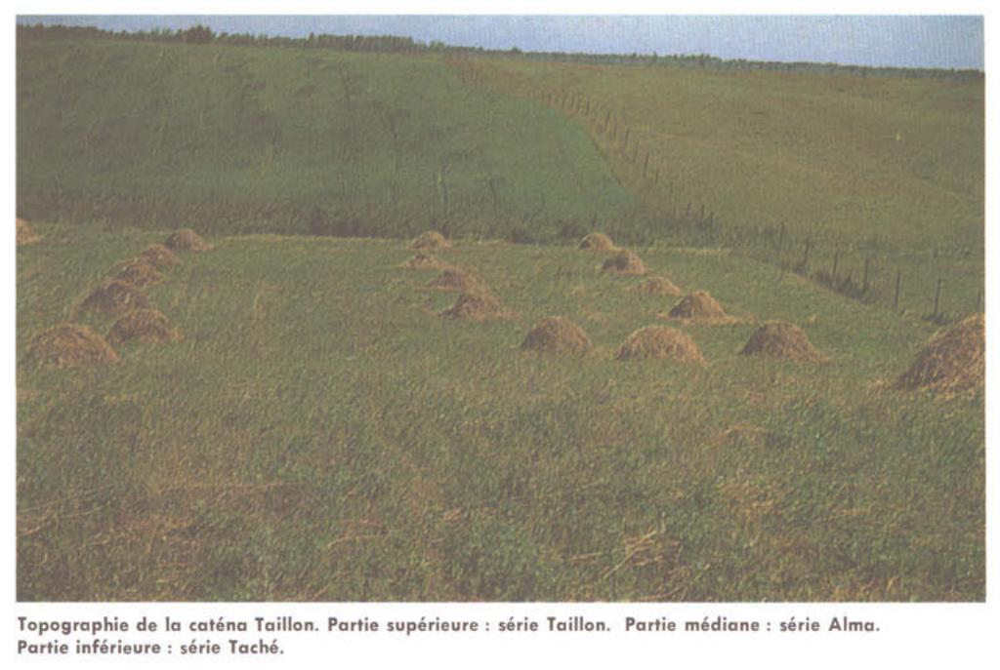

Identification & Caractéristiques Générales
La série Taché se développe sur des matériaux minéraux fins à texture limoneuse (loam), souvent recouverts d'une mince couche organique, constituant le terme le plus hydromorphe de la caténa Taillon. Ce sol minéral de transition, s'apparentant aux terres noires minces sur argile, se rencontre généralement en position topographique horizontale ou en dépression au sein des paysages de basses terres. Sa mise en place est associée à des conditions de sédimentation de milieux de faible énergie où l'accumulation de matière organique en surface se superme à des dépôts argileux ou limoneux sous-jacents, en association géographique avec les séries Taillon, Alma et Chicoutimi.
Le profil pédologique est caractérisé par une hydromorphie prononcée induisant des processus intenses de gleyification, classant ce sol parmi les gleysols humiques orthiques ou les gleysols orthiques à phase tourbeuse. Le drainage naturel y est intrinsèquement mauvais à très mauvais, la nappe phréatique demeurant élevée de façon quasi permanente en raison de la faible perméabilité des horizons inférieurs et de la position en cuvette. La texture dominante est un loam de surface surmontant un sous-sol argileux compact. La réaction chimique du sol démontre une forte acidité, entraînant des besoins élevés en amendements calciques (chaulage), tandis que la fertilité naturelle intrinsèque est jugée faible.
Sur le plan agronomique, l'utilisation de la série Taché est conditionnée par la réalisation préalable de travaux majeurs d'assainissement et de drainage souterrain pour évacuer l'excès d'eau. En raison de sa texture et de sa composition, ce sol présente un potentiel pour des productions maraîchères spécifiques, notamment les légumes-feuilles et les légumes-racines, lorsque les superficies le permettent et que le contrôle de l'eau est maîtrisé. La régie de fertilisation requiert, outre le chaulage correctif, des apports substantiels et réguliers en phosphore et en potasse pour pallier les carences inhérentes de ce milieu et soutenir des rendements agricoles viables.
Caractères Distinctifs & Morphologie Génétique (Comté de Chicoutimi — Page 43)
- Topographie : déprimée
- Drainage : mauvais à très mauvais
- Grand-groupe génétique : gleysol
- Degré d'érosion : nul
- Classe d'utilisation : 2 (1)
- Association géographique : série Alma; terres noires sur argiles
- Végétation naturelle : épinettes, mélèzes, aulnes, bois de savane, etc.
Classification Taxonomique & Environnement Pédologique
| Ordre Pédologique | Gleysolique |
|---|---|
| Grand Groupe (SCSS) | Gleysol humique |
| Sous-Groupe Taxonomique | Gleysol humique régosolique |
| Famille Pédologique | Limoneuse-fine, mixte sableux, neutre |
| Mode de Dépôt Parental | Lacustre sur marin |
| Classe de Drainage Naturel | Mal drainé |
| Régime Thermique & Humidité | Frais / Subaquique |
Description Morphologique du Profil Type
Séquences génétiques des horizons pédologiques caractérisant le profil type représentatif de la série Taché :
Profil forestier / boisé — Comté de Charlevoix
✓ Source : Comté de Charlevoix — Page 46Couleur Munsell : 5YR 2/2
Structure & Consistance : Polyédrique à granulaire
Description morphologique : Loam limono-argileux rouge très sombre (2,5 YR 2/2 h); marbrures peu nombreuses, petites, faibles; polyédrique angulaire, modérée, fine; très friable; limite abrupte, régulière; très fortement acide.
Couleur Munsell : 5Y 4/1
Structure & Consistance : Polyédrique à granulaire
Description morphologique : Loam argileux gris foncé (5 Y 4/1 h); marbrures nombreuses, moyennes (partie supérieure) et petites (partie inférieure), distinctes; massive; très ferme; limite distincte, régulière; faiblement acide.
Couleur Munsell : 5Y 5/2
Structure & Consistance : Polyédrique à granulaire
Description morphologique : Argile gris olive (5 Y 5/2 h); marbrures peu nombreuses, petites, faibles; polyédrique angulaire, faible, fine; friable; neutre.
Profil forestier / boisé — Comté de Chicoutimi — Phase tourbeuse
✓ Source : Comté de Chicoutimi — Page 43Couleur Munsell : Non précisée
Structure & Consistance : Polyédrique à granulaire
Description morphologique : Terre noire bien décomposée; matière minérale.
Couleur Munsell : 5YR 2/2
Structure & Consistance : Polyédrique à granulaire
Description morphologique : Loam argileux rouge très sombre (2,5YR 2/2); feuilleté; se débite en cubes; pH: 5,0.
Couleur Munsell : 5Y 4/1
Structure & Consistance : Polyédrique à granulaire
Description morphologique : Loam argileux gris foncé (5Y 4/1); pH: 5,5.
Couleur Munsell : 5Y 5/1, 10YR 5/8, 10YR 6/8
Structure & Consistance : Polyédrique à granulaire
Description morphologique : Argile limoneuse, gris (5Y 5/1) avec taches brun jaune (10YR 5/8) à jaune brun (10YR 6/8); de plus en plus argileux en profondeur; pH: 5,8.
Profil représentatif — Pédologie de la région du Lac-Sa
✓ Source : Pédologie de la région du Lac-Sa — Page 64Couleur Munsell : Non précisée
Structure & Consistance : Polyédrique à granulaire
Description morphologique : Terre noire bien décomposée, friable; pH: 4.4.
Couleur Munsell : 2.5YR 2/2
Structure & Consistance : Polyédrique à granulaire
Description morphologique : Loam argileux rouge très sombre (2.5YR 2/2); feuilleté; se débite en cubes; pH: 5.0.
Couleur Munsell : 5Y 4/1
Structure & Consistance : Polyédrique à granulaire
Description morphologique : Loam argileux gris foncé (5Y 4/1); pH: 5.5.
Couleur Munsell : 5Y 5/1, 10YR 5/8, 10YR 6/8
Structure & Consistance : Polyédrique à granulaire
Description morphologique : Argile limoneuse, gris (5Y 5/1) avec taches brun-jaune (10YR 5/8) à jaune-brun (10YR 6/8); de plus en plus argileux en profondeur; dense, massif, se débite nettement en donnant des surfaces unies, lisses; brisure conchoïdale; pH: 5.8.
Profils Photographiques & Planches de Terrain
Documents iconographiques, figures pédologiques et coupes de terrain documentées dans les mémoires d'inventaire pour de la série Taché :

Propriétés Physico-Chimiques & Analyses de Laboratoire
| Horizon | Prof. (pces/cm) | Sable % | Limon % | Argile % | pH | C % | N % | Ca éch. | Mg éch. | K éch. | H+ éch. | Bases tot. | C.E.C. (meq/100g) | Saturation % | ||||||||||||
|---|---|---|---|---|---|---|---|---|---|---|---|---|---|---|---|---|---|---|---|---|---|---|---|---|---|---|
| Ap(Oh) | 0-25 | matière organique | - | - | - | 4,8 | 4,1 | 18,85 | 0,92 | 0,86 | 0,76 | 1,07 | 1,30 | 7,35 | 2,37 | 0,31 | 0,13 | 32,0 | 42,16 | 24 | 70 | 2096 | ||||
| Bhfgj | 25-29 | 1,0 | 3,0 | 1,0 | 5,0 | 10,0 | 54,0 | 36,0 | - | 4,7 | 4,0 | 8,46 | 0,41 | 1,47 | 1,01 | 1,98 | 1,96 | 4,75 | 1,86 | 0,26 | 0,12 | 28,0 | 30,99 | 10 | 62 | 1850 |
| Bg | 29-53 | 0,0 | 1,0 | 6,0 | 29,0 | 36,0 | 34,0 | 30,0 | - | 6,4 | 5,5 | 0,23 | 0,05 | 1,40 | 0,15 | 0,19 | 0,13 | 11,60 | 5,40 | 0,73 | 0,25 | 2,0 | 19,98 | 90 | 420 | 2096 |
| II Cg | 53 + | 0,0 | 2,0 | 4,0 | 4,0 | 10,0 | 34,0 | 56,0 | - | 7,1 | 6,1 | 0,19 | 0,05 | 1,17 | 0,17 | 0,07 | 0,06 | 11,80 | 4,75 | 0,86 | 0,26 | 1,0 | 18,67 | 95 | 694 | 2342 |
Particularités Régionales, Phases & Variantes Pédologiques
Déclinaisons régionales, faciès texturaux, phases d'érosion ou de pierrosité et variantes cartographiées par étude pour de la série Taché :
| Étude Régionale | Symbole | Appellation / Phase / Variante | Différenciation avec la série type (Analyse pédologique) |
|---|---|---|---|
| Comté de Charlevoix | Tc |
Taché loam limono-argileux | Modalité modale de référence (type de base de la série). |
| Comté de Chicoutimi | Tc |
Taché loam | Faciès à texture loameuse plus aérée et perméable que l'argile de référence (travail du sol plus aisé et meilleur égouttement). |
| Pédologie de la région du Lac-Saint-Jean | Tc |
Taché loam | Faciès à texture loameuse plus aérée et perméable que l'argile de référence (travail du sol plus aisé et meilleur égouttement). |
Distribution Pédo-Paysagère & Représentativité Cartographique (Couverture PPS 2026)
- Alma loam (ALM) — co-occurrente dans 180 polygone(s)
- Taillon loam (TLL) — co-occurrente dans 147 polygone(s)
- Alluvion non différenciée à surface sableuse (ALL) — co-occurrente dans 37 polygone(s)
Aptitudes Agronomiques, Hydropédologie & Conservation des Sols
Indicateurs Hydropédologiques & Vulnérabilité à l'Érosion (BDHP 2026)
Interprétation BDHP : Potentiel de ruissellement modérément élevé. Faible taux d'infiltration, présence d'horizons ralentissant le drainage descendant.
Classement selon l'Inventaire des Terres du Canada (ITC / CLI) : Classe 2w.
- Potentiel agricole : Terroir adapté aux cultures régionales selon la texture dominante et la régie de drainage.
- Contraintes majeures : Mal drainé. Risque d'engorgement temporaire ou d'excès d'eau printanier.
- Gestion & Aménagement : Drainage souterrain ou superficiel préconisé sur les terres planes. Chaulage et apport organique régulier selon les bilans agronomiques.
- Cultures adaptées : Grandes cultures (maïs, soya, céréales), prairies fourragères et cultures maraîchères selon le contexte géomorphologique.